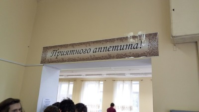

Столовая в СУНЦе состоит из двух залов: малого и большого. В малом питаются ученики 10х классов, а в большом, соответственно, ученики 11х. Конечно, обслуживает каждый сам себя. Для этого и существуют подносы, главное, не забывайте относить их назад на раздачу, иначе кому-то может не хватить. Оба зала оборудованны удобными столами разной длины, как для большой компании, так и для камерных посиделок. В целом, столовка - довольно приятное место.
Столовка остается основным местом питания сунцов. Плюсы на лицо: бесплатно(кроме оплаты за обучение, конечно), близко, атмосферно. К тому же, обладая небольшой ловкостью и беспалевностью, можно почти неограничено брать порции. А на ужине особо общительные ребята любят посидеть за стаканом чая и поболтать за жизнь, что определенно плюс в пользу столовки.
Но все-таки минусы родной столовой на данный момент чувствуются. Основной проблемой для многих станет качество питания. Распределение вероятности вкусной еды в СУНЦе довольно неоднородно. Не смотря на заментное улучшение качества общепита, иногда попадаются некоторые неоднородные неприятные субстанции. Тем не менее, меню всегда можно посмотреть в большом зале и сразу определиться, на что ходить, а что можно и пропустить. К минусам столовки также относятся огромные очереди, но эта проблема легко решается умелыми действиями дежурных.
Дежурные - это очень важные люди из дежурного класса. Они приходят самые первые, чтобы расставить хлеб, и уходят самые последнии, проверив, что все чисто и аккуратно. Основной функцией дежурных является регулировка очереди. Очередь состоит из двух частей: мальчики и девочки. Именно дежурный решает сколько человек пройдет к заветной пище. Поэтому от его действий зависит размер очереди, а также настроение стоящих в ней сунцов. При огромной очереди и неумелом дежурном парни могут рассвирепеть и вытолкнуть голову очереди в зал. Но не смотря ни на что, в очереди необходимо соблюдать спокойствие и терпимость. А также не нужно лезть без очереди, это не приветствуется, а особо эмоциональные люди могут открыто вступить с нарушителем в конфликт.
В целом, столовка - весьма неплохое место. К тому же, в последнее время она только улучшается. И если денег имеется не много, то она может стать вполне годным источником пропитания на период обучения в СУНЦе.